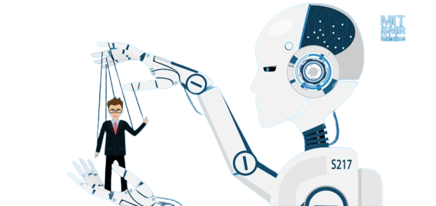

OPORTUNIDAD
a oportunidad asociada con la Inteligencia Artificial (IA) radica en su potencial para impulsar avances significativos en una amplia gama de campos. Desde mejorar la eficiencia y la productividad en los negocios hasta revolucionar la atención médica, la IA ofrece oportunidades para automatizar tareas tediosas.
RIESGO
El riesgo asociado con la Inteligencia Artificial (IA) se centra en los posibles impactos negativos que pueden surgir de su desarrollo y aplicación. Esto incluye problemas como el sesgo algorítmico, que puede conducir a decisiones discriminatorias.